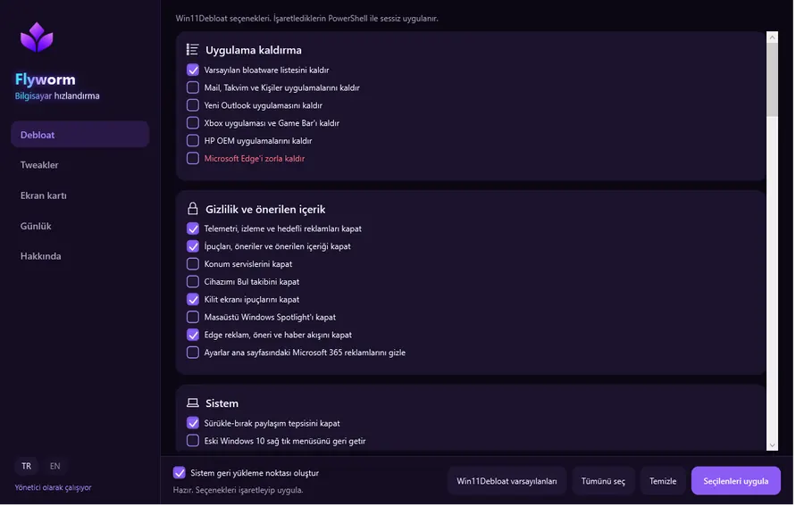
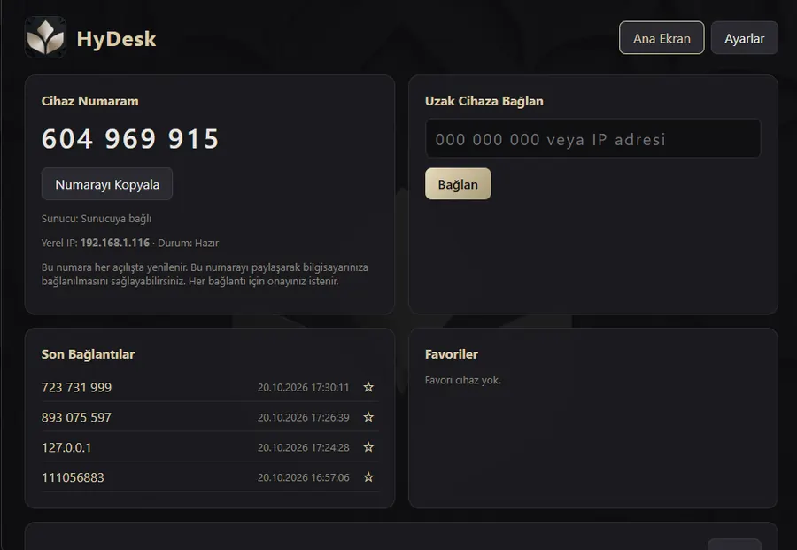
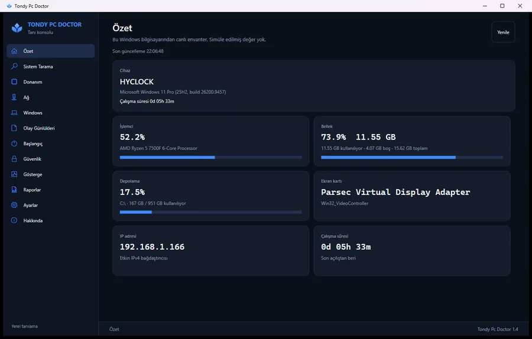
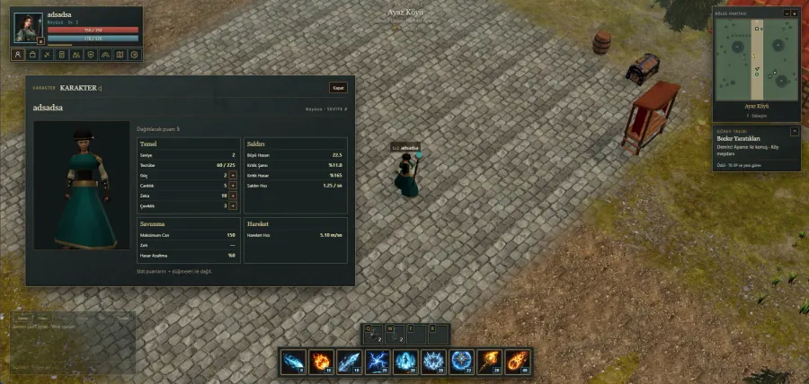

Support and Endpoints
- End-user support and troubleshooting
- Windows 10 / 11 installation and configuration
- Hardware fault diagnosis
- Software installation and configuration
- Remote desktop support
IT Support • Systems • Networking
I work in end-user support, hardware troubleshooting and network infrastructure operations at Istanbul Nişantaşı University.
I am an IT Support Specialist at Istanbul Nişantaşı University. I support campus users, diagnose endpoint and hardware faults, and take part in field operations on network infrastructure devices.
Istanbul Nişantaşı University · IT Department
Istanbul Nişantaşı University
2026 — PresentI handle IT requests from academic and administrative staff and students, following each issue from first contact to resolution.
An associate degree focused on information security, plus continuous learning.
Istanbul Kent University
2024 — 2026 · GraduatedA comprehensive associate programme covering cybersecurity, network management, operating system security and cryptography.
Selected projects where I turned technical curiosity into usable, tangible products.

A performance and tweaking utility for Windows 11.

A remote desktop application that connects securely by device ID or IP address.

A desktop app that analyses Windows system data to simplify diagnostics and troubleshooting.
An interactive browser game featuring user interactions and game mechanics.

A browser-based online role-playing game, currently in development.
Certificates and achievements documenting my technical and professional growth.
Let's connect about IT opportunities, projects and professional collaboration. I'm just an email away.
Let's talk